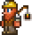
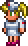
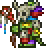

.png)
Terraria es un juego de construcción que además contiene elementos de exploración y aventura como los juegos clásicos del SNES, como por ejemplo Metroid.
Antes de comenzar, el jugador puede personalizar el personaje: cambiando su pelo, camisa, pantalones, zapatos y colores de los mismos, el cursor del ratón también se puede cambiar de color (en opciones), entre otras personalizaciones que permite el juego. Al principio el jugador recibirá un hacha de cobre, un pico de cobre y una espada corta de cobre, cien puntos de vida (cinco corazones).
Junto con el personaje del jugador al lado del Guía, un NPC (personaje no jugable) que nos aconseja sobre nuestra marcha y nos muestra un menú de artesanía. Si se construye una casa, y esta cumple con los requerimientos para serlo, entonces si están creadas las condiciones un NPC ocupará el local. El jugador no está obligado a vivir en una casa.
El juego también tiene sus características propias. Cuando el jugador llega cumple con situaciones específicas, algunos NPCs pueden aparecer y ocupar una habitación (siempre y cuando el jugador disponga de una).
Entre estos NPCs que se puede albergar a:
| NPC | Imagen |
|---|---|
| El Comerciante |  |
| La Dríada |  |
| El Demoledor |  |
| El Vendedor de armas |  |
| La Enfermera |  |
| La Mecánica |  |
| El Duende Chapucero |  |
| El Vendedor ambulante |  |
| El Pescador |  |
| NPC | Imagen |
|---|---|
| El Mago |  |
| Papá Noel |  |
| La Steampunker | |
| El Vendedor de tintes |  |
| La Chica fiestera |  |
| El Cyborg |  |
| El Pintor |  |
| El Médico brujo |  |
| El Pirata |  |
Estos personajes pueden curar, vender artículos y otros servicios, donde el jugador utiliza sus monedas para pagarlos, monedas obtenidas de los monstruos al derrotarlos, destruir las vasijas, vender objetos o incluso al encontrar cofres y tesoros escondidos a lo largo del mundo. El juego también incluye biomas con monstruos independientes, como el infierno, la corrupción, los bosques, la selva, la tundra, el desierto, etc.
El juego también cuenta con eventos como la Luna de Sangre, donde se presentan más monstruos y estos pueden entrar en las estructuras construidas por el jugador. Otro evento es una Invasión de Duendes. Algunos monstruos o jefes, como el Ojo de Cthulhu, también pueden aparecer si el jugador cumple determinadas situaciones o tiene elementos específicos para invocarlos.
También hay eventos como la luna de calabaza o la luna helada las cuales son más difíciles y avanzadas ya que cuentan con monstruos muy poderosos. También se puede batallar con jefes, los cuales dan objetos al ser derrotados por el jugador y son sumamente difíciles de matar. La mayoría son específicos de un bioma, como El Muro carnoso que se encuentra en el infierno o Skeletron, el cual aparece en la entrada a la mazmorra, la Abeja Reina que se encuentra destruyendo su larva en un panal de abejas o utilizando la Abeemination, también puede ser el caso de Plantera, la cual se invoca en la selva destruyendo una flor color rosa llamado bulbo de Plantera.